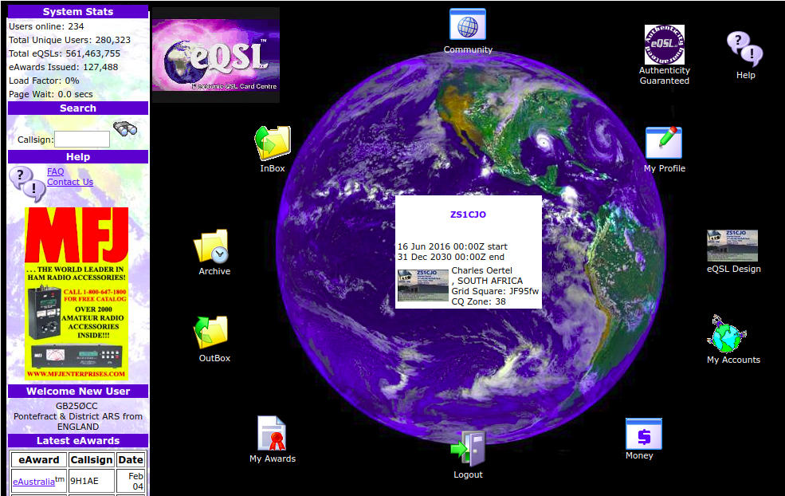

Intro to Electronic QSL
A crash course in getting started
by Charles Oertel (ZS1CJO)
This promises to be such an interesting talk...
Anne Bareham
Agenda
- Quiz
- Overview of Electronic Logging
- The CTARC ILLW Logging Process
- Capturing Log Data
- Exporting Log Data
- Log Format Examples
- Importing to Online Sites
Quiz
Who ...- ... keeps their logs in a paper logbook?
- ... keeps logs in software on their computer?
- ... uses an online QSL service?
- ... has their log software automatically capture data from the radio?
- ... uses Open Source software (linux) on their computer?
Intro to Electronic Logging
- Definition: A computer version of your paper station logbook.
- It could be ...
- ... a computer program: spreadsheet, DXKeeper, Logger 32, SwissLog, XLog, (Google for more)
- ... a website (LoTW, eQSL, ClugLog, etc.).
- ... a combination of the above
Why Online (Website) Logs:
1. Safer:
- your logs are kept and managed by professionals and are safer from computer crashes or theft
2. More Functionality:
- Easy for others to confirm QSOs
- Automatic/Manual submissions for various awards
- Look up details of a callsign
3. Cheaper:
- no postage fees and hassle
Review Confirmed QSOs (LoTW)
Online QSL Sites:
- LoTW*: lotw.arrl.org
- eQSL*: www.eqsl.cc
- SARL*: www.sarl.org.za
- ClubLog: www.clublog.org
- QRZ.com: qrz.com
* Used by CTARC
LotW
Logbook of The World
http://www.arrl.org/logbook-of-the-world
- Logbook of the World (LoTW) is an online service that enables you to
- electronically submit QSOs for confirmation
- view resulting QSO confirmations online
- electronically submit confirmations for credit toward DXCC, VUCC, WAS, WAZ and WPX awards
- view your DXCC, VUCC, WAS, WAZ and WPX award progress online
eQSL
http://www.eqsl.cc
SARL
- For local contests, QSLs and Awards.
- For SARL members only.
- Current online logging mechanisms not very robust.
SARL cntd...
And that is why I didn't bother videoing the process.
Electronic Logging Process
CTARC ILLW Logs
- During the ILLW weekend QSOs are logged on paper.
- The paper logs are captured electronically.
- The electronic logs are imported to three sites:
- LoTW,
- eQSL, and
- the SARL.
2. Capturing the Logs
Paper logs (often hard to read or interpret)

Logging Program - XLog
An Open Source logging program. You can use any other program that allows exporting to ADIF and/or CSV.

Exporting from XLog
We need to export to:
- ADIF (for LoTW and eQSL), and
- CSV (for SARL).
Log Formats
ADIF - Amateur Data Interchange Format
ADIF Export from xlog Version 2.0.13
Copyright (C) 2012 Andy Stewart <andystewart@comcast.net>
Copyright (C) 2001-2010 Joop Stakenborg <pg4i@amsat.org>
Internet: http://savannah.nongnu.org/projects/Xlog
Date of export: 06 Feb 2018 16:08:09
Callsign: ZS1CJO
Locator: JF95FW
<ADIF_VER:5>2.2.7
<EOH>
<QSO_DATE:8>20170819 <TIME_ON:4>1000 <CALL:4>ZS9V <FREQ:1>7 <MODE:3>SSB <RST_SENT:2>59 <RST_RCVD:2>59 <TX_PWR:3>100 <NAME:5>Andre <QTH:13>Robben Island <COMMENT:27>ZS1CT @ JF96EC73XP for ILLW
<EOR>
<QSO_DATE:8>20170819 <TIME_ON:4>1035 <CALL:5>ZS1CO <FREQ:1>7 <MODE:3>SSB <RST_SENT:2>59 <RST_RCVD:2>59 <TX_PWR:3>100 <NAME:4>Mike <COMMENT:27>ZS1CT @ JF96EC73XP for ILLW
<EOR>
...
CSV - Comma Separated Values.
V51B,SSB,20160820,1104,40m
ZS1ROD,SSB,20160820,1106,40m
ZS2ABZ/L,SSB,20160820,1108,40m
ZS3RW/L,SSB,20160820,1109,40m
ZS1VDP/L,SSB,20160820,1114,40m
3. Importing Log Data to QSL Websites
1. LoTW
Setup TrustedQSL
- Uploads are done by a certificate-secured program called 'TrustedQSL'
- The first time, you need to request a certificate from the computer where it will be used. When I got a new laptop I had to re-apply for a certificate (can be avoided if you take a backup of the configuration).
- You can have more than one certificate/callsign/location, and club callsigns are supported.
Upload Log File to LoTW using TrustedQSl
2. eQSL
3. SARL
Requirements for Capturing QSLs:
- The QSL account for CTARC needs to be linked to the profile of a paid up SARL member. You do this by emailing a request to the webmaster of the SARL site at webmaster@sarl.org.za.
- The site accepts only new ADIF format uploads, or CSV files with the following format:
ZS0123,SSB,20050811,1200,40m
- The process is buggy and I ended up sending the CSV file to the webmaster by email to upload.
Revision
- Quiz
- Who learned something (anything) today?
- Overview of Electronic Logging
- The CTARC ILLW Logging Process
- Capturing Log Data
- Exporting Log Data
- Log Format Examples
- Importing to Online Sites
Thanks...
... to CTARC for the opportunity to learn about electronic logging.
Copy of these slides at ...
https://buchubaron.github.io/ham-logging-intro/Charles (ZS1CJO)
charles@honeybadger.net